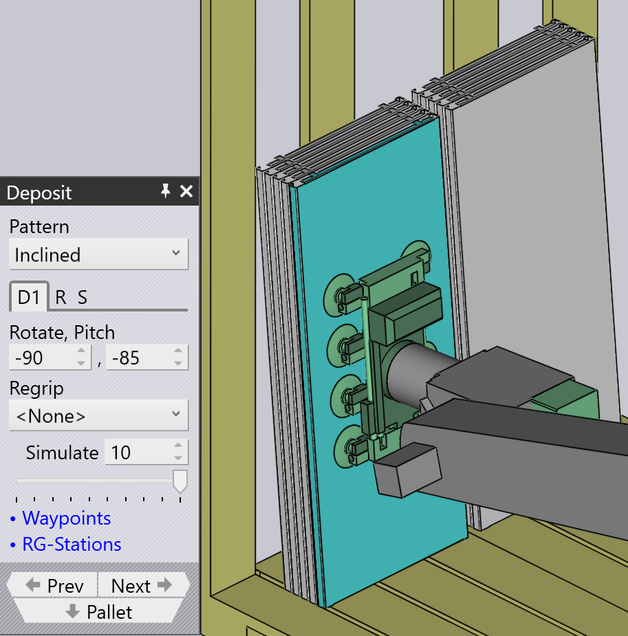

Typy vzorů uložení
Simple Grid
Vzor Simple Grid je nejčastěji používaný a jednoduše skládá díly v obdélníkové mřížce na paletě.
Když použijeme pozici Simple Grid, je ve výchozím nastavení k dispozici pouze jedna pozice uložení D1.

Weave
Vzor Weave je užitečný u dlouhých a tenkých dílů. Díly ve vrstvách D2 jsou umístěny o 90° od dílů ve vrstvě D1, jak je zobrazeno vedle.


-
Nastavení Weave řídí počet dílů skládaných vedle sebe v každé vrstvě přepletu.
-
Gap je mezera mezi každým z těchto dílů v rámci přepletu
-
Nastavení Grid na kartě Repeat lze pak použít k opakování celé hromady přepletu několikrát na paletě. V tomto příkladu se hromada přepletu opakuje dvakrát (2 sloupce, 1 řádek).
-
Nastavení Gap (Z,X) na kartě Repeat se používá, když se přeplet opakuje, a specifikuje rozteč mezi vrstvami přepletu.
Alternating
Vzor Alternating je nejflexibilnější. V tomto vzoru můžete řídit orientaci, překlápění a relativní posun každé střídající se vrstvy.
Střídavý vzor poskytuje stabilnější a také kompaktnější skládání dílů.
Když použijeme střídavý vzor, jsou ve výchozím nastavení k dispozici pozice uložení D1 a D2 spolu s Regrip R1.
| Upravte hodnoty Delta shift v D1, D2 a přidejte Regrip k uzamčení dílů navzájem. |

Alternating Batch
Vzor Alternating Batch je podobný střídavému vzoru, ale s možností skládat komponenty v dávkách a střídavých vrstvách.
Batch shift se používá k posouvání dílů do a z os Z a X v rámci dávky.
Batch count se používá k definování počtu komponent na dávku na uložení D1, který se může pohybovat od 1 do 50. V níže uvedeném příkladu je nastaven na 5.
Delta shift se používá k posunutí celého uložení D1 sestávajícího z dávek do a z os Z a X.


Použijte možnost layers na kartě Repeat grid \(R) k definování počtu dávek na uložení. V níže uvedeném příkladu je nastaven na 2.

Drop to Basket
Tento vzor se používá k spuštění malých dílů do sběrného koše pomocí mechanického uchopovače.

Conveyor
Vzor Conveyor se používá k uložení dílů na dopravník dílů. Tato možnost je nezbytná, když jsou na dopravník ukládány dlouhé tenké díly.
| Když je pro díly střední velikosti použit mechanický čelistní uchopovač, všechny ostatní typy vzorů budou zakázány pro výběr, kromě vzoru dopravníku. |

Inclined
Vzor Inclined se používá k svislému skládání dílů proti stěně (nebo paletě, která má boční stěnu).
| Tento vzor není vždy k dispozici. Díl musí být dostatečně velký, aby to bylo proveditelné. U malých dílů nemůže robot dosáhnout dostatečně nízko, aby díl složil proti stěně. |

Inclined pair
Tento typ vzoru je velmi podobný vzoru Alternating, s výjimkou toho, že díly jsou ukládány svisle jako pár.
Další Regrip je zaveden buď v uložení D1 nebo D2, aby se vytvořil pár.
Auto-pitch určuje úhel náklonu hromady automaticky.
Nastavení Pitch se používá k úpravě úhlu náklonu skládání a hodnoty Delta shift se používají k posunutí dílu v osách X a R, aby se vytvořila kompaktnější hromada.


Manual
Vzor Manual se používá k umístění každé vrstvy dílů v mírně odlišné orientaci.

-
Použijte tlačítko Add k přidání nového dílu na vrch nejvyšší vrstvy.
-
Použijte navigační tlačítka vedle karty Dn k přechodu na předchozí nebo další vrstvu.
-
Nastavení Delta shift, Rotate a Pitch lze použít k úpravě dílu, aby lépe seděl na dílu níže. Můžete také použít Delta shift a kliknout na Auto-pitch, abyste požádali TecZone Bend o výpočet optimálního úhlu náklonu.
-
Použijte tlačítko Remove k odstranění nejvyššího dílu.
-
Po vytvoření manuální hromady můžete použít nastavení na kartě Repeat ® k opakování stejné hromady napříč paletou. Výše uvedený obrázek ukazuje stejnou hromadu opakovanou pro 2 sloupce, 1 řádek s mezerou 250 mm mezi sloupci.
-
Nastavení na kartě Sequence (S) lze použít k řízení, zda jsou díly skládány by layer nebo by pile. Pokud použijete skládání hromadu po hromadě, všechny díly na první hromadě jsou dokončeny, než začneme s druhou hromadou.